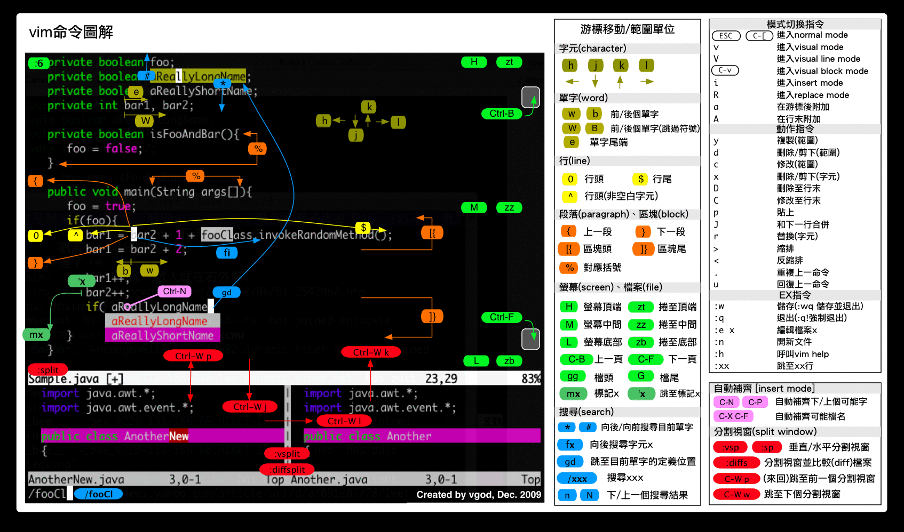

vim
Table of Contents
- Resources
- Commands
- Normal mode
- Move around
- Search
- Replace
- Text substitution
- Syntax
- Example 1: Substitute all occurence of a text with another text in the whole file
- Example 2: Substitute of a text with another text within a single line
- Example 3: Substitution of a text with another text within a range of lines
- Example 4: Substitution of a text with another text by visual selection of lines
- Example 5: Substitution of a text with another text only the 1st X number of lines
- Example 6: Substitute only the whole word and not partial match
- Example 7: Substitute either word1 or word2 with a new word using regular expression
- Example 8: Interactive Find and Replace in Vim Editor
- Example 9: Subsituting all lines with its line number.
- Example 10: Substituting special character with its equivalent value.
- Example 11: Alter sequence number in a numbered list while inserting a new item
- Example 12: Substituting the sentence beginnings with upper case. (i.e. title case the entire document)
- Text substitution
- File Operation
- Buffer Operation
- Window Operation
- Copy/paste/delete
- Indentation
- Switch to insert mode
- Switch to visual mode
- Repeating
- FASTER
- Folding
- recording and play
- tab navigation
- Command Line Mode
- Visual mode
- Insert mode
- System
- Normal mode
- Extensions
- Configuration
- Vim as IDE
- Plugins
- Issues & Solutions
- Advanced topics
- Refresh all files in buffer from disk in vim
- set line length
- use multiple file types at the same time
- view the currently mapped keys in vim
- Remove unwanted trailing whitespaces
- disable spelling check
- Build vim with lua support
- Building vim with lua & python, etc.
- vi/vim使用进阶: 目录 @ 易水博客
- How to navigate in large project in VIM
- How to rename a variable/name etc.?
- How to copy/paste between diffrent vims (using system clipboard)
- How to force vim to syntax-highting a file as html?
- How to fold/unfold HTML tags with Vim
Resources
Vim Official Sites
- Vim Homepage
- Vim documentation: help
- Vi and Vim Editor: 12 Powerful Find and Replace Examples (notes in Text substitution) by Sathiyamoorthy: This article is part of the on-going Vi / Vim Tips and Tricks series. Vim is commonly mentioned as text editor, not text creator. Why ? Because we spend lot of time editing an existing text than creating new text. In the text editing, text/pattern substitutions becomes a vital part.
- Vim 101 hacks by Ramesh Natarajan. I’m a command-line junkie. So, naturally I’m a huge fan of Vi and Vim editors. Several years back, when I wrote lot of C code on Linux, I used to read all available Vim editor tips and tricks. Based on my Vim editor experience, I’ve written Vim 101 Hacks eBook that contains 101 practical examples on various advanced Vim features that will make you fast and productive in the Vim editor. Even if you’ve been using Vi and Vim Editors for several years and have not read this book, please do yourself a favor and read this book. You’ll be amazed with the capabilities of Vim editor. ($39.95)
- Vi and Vim Macro Tutorial: How To Record and Play
- Turbocharge Firefox Browser With Vim Editor Functionality Using Vimperator Add-on
- Tutorial: Make Vim as Your C/C++ IDE Using c.vim Plugin
- Convert Vim Editor to Beautiful Source Code Browser for Any Programming Language
Tutorials
- 跟我一起学习VIM - The Life Changing Editor: 如何配置集成开发环境，如何使用专家的配置
- vim 简明教程: 翻译自 learn vim progressively
Distributions
- spf13: Steve Fancia's Vim Distribution（上文作者强烈推荐）
Vim commands cheat chart

Vim plugins repository
- VimAwesome: Awesome vim plugins from across the universe
Commands
Normal mode
Move around
| Key | Purpose | Comment |
|---|---|---|
| hjkl | move cursor around | |
| 0 | go to the first column | |
| ^ | go the the first non-blank char of line | |
| $ | go the end of line | |
| g_ | go the last non-blank char of line | |
| C-f | next page | |
| C-b | previous page | |
| C-d | next half page | |
| C-u | previous half page | |
| G | go to last line | |
| gg | shortcut for 1G - go to the start of file | |
| + | 移动到非空格符的下一列 | |
| - | 移动到非空格符的上一列 | |
| H | screen top | |
| M | screen middle | |
| L | screen bottom | |
| zt | scroll to screen top | |
| zz | scroll to screen middle | |
| zb | scroll to screen bottom | |
| mx | make a mark 'x' | |
| 'x | jump to mark 'x' | |
| ``/'' | to the position before the latest jump, or where the last m'/m` was given | |
| <N>G | go to line | |
| w | go to the start of the following word | |
| b | go to the start of the preceding word | |
| e | go to the end of this word | |
| W | go to the start of the following WORD | no symbol |
| B | go to the start of the preceding WORD | no symbol |
| E | go to the end of this WORD | no symbol |
Search
| Key | Purpose | Comment |
|---|---|---|
| /pattern | search for pattern | |
| n | next search result | |
| N | previous search result | |
| % | go to the corresponding (, {, [ | |
| * # | go to the next (previous) occurence of the word under the cursor | |
| fa | go to next occurence of 'a' on the line | ,/; will find the next/previous occurence |
| t, | go to just before ',' | |
| 3fa | find the 3rd occurence of 'a' on this line | |
| F / T | like f/t but backward |
Replace
| Key | Purpose | Comment |
|---|---|---|
| r | replace a single letter | |
| R | replace more than 1 letter on the current line | ESC when finished |
| s | replace a single character with multiple characters | |
| S | replaces the entire line | |
| :s/search/replace | replace the string search with the string replace |
Text substitution
Syntax
:[range]s[ubstitute]/{pattern}/{string}/[flags] [count]
Meaning: For each line in [range] replace a match of {pattern} with {string}.
Three possible flags:
- [c] Confirm each substitution.
- [g] Replace all occurrences in the line.
- [i] Ignore case for the pattern.
String can be a literal string, or something special,
Range can be:
- {number}: an absolute line number
- . : the current line
- $ : the last line in the file
- % : equal to 1,$ (the eintire file)
- 't: position of mark t (lowercase), when the mark is in another file, it cannot be used in a range
- 'T: position of mark T (uppercase)
- /{pattern}
[/]: the next line where {pattern} matches - ?{pattern}[?]: the previous line where {pattern} matches
- \/: the next line where the previously used search pattern matches
- \?: the previous line where the previously used search pattern matches
- \&: the next line where the previously used substitute pattern matches
- Each may be followed (several times) by '+' or '-' and an optional number. This number is added or subtracted from the preceding line number. If the number is omitted, 1 is used.
When count is given, replace in [count] lines, starting with the last line in [range]. When [range] is omitted, start in the current line.
When [range] and [count] are omitted, replace in the current line only.
Example 1: Substitute all occurence of a text with another text in the whole file
This is the basic fundamental usage of the text substitution inside Vim.
:%s/old-text/new-text/g
Example 2: Substitute of a text with another text within a single line
In a case insensitive manner:
:s/I/We/gi
Example 3: Substitution of a text with another text within a range of lines
:1,10s/helo/hello/g
Do substitution only in the lines 1-10.
Example 4: Substitution of a text with another text by visual selection of lines
C-V in command mode, use navigation keys to select the part. Press ':' which will automatically formed as :'<,'>, then you can use the normal substitute as
:'<,'>s/helo/hello/g
Example 5: Substitution of a text with another text only the 1st X number of lines
Using count in substitution. It means do substitution in N lines from the current position of the cursor.
:s/helo/hello/g 4
Do substitution in 4 lines from the current line.
Example 6: Substitute only the whole word and not partial match
You should enclose the word with < and > (don't forget they are special symbols - use \< and \>).
:s/\<his\>/her/g
Example 7: Substitute either word1 or word2 with a new word using regular expression
:%s/\(good\|nice\)/awesome/g
Or do substitution for whole words:
:%s/\<\(hey\|hi\)\>/hai/g
Example 8: Interactive Find and Replace in Vim Editor
Add 'c' flag:
:%s/awesome/wonderful/gc replace with wonderful (y/n/a/q/l/^E/^Y)?
- y: will replace the current highlighted word.
- n: will not replace the current highlighted word.
- a: will substitute all the highlighted words automatically.
- l: will replace only the current highlighted word and terminate.
Example 9: Subsituting all lines with its line number.
When the string starts with '\=', it should be evaluated as an expression. Using the line function we can get the current line number.
Add line number for each line:
:%s/^/\=line(".") . ". "/g
Example 10: Substituting special character with its equivalent value.
Original Text: Current file path is ~/test/ :%s!\~!\= expand($HOME)!g Translated Text: Current file path is /home/ramesh/test/
You can use expand function to use all variable predefined and user defined variables.
Example 11: Alter sequence number in a numbered list while inserting a new item
vi / vim tips & tricks series Article 1: Vi and Vim Editor: 3 Steps To Enable Thesaurus Option Article 2: Vim Autocommand: 3 Steps to Add Custom Header To Your File Article 3: 5 Awesome Examples For Automatic Word Completion Using Ctrl-X Article 4: Vi and Vim Macro Tutorial: How To Record and Play Article 5: Tutorial: Make Vim as Your C/C++ IDE Using c.vim Plugin Article 6: How To Add Bookmarks Inside Vim Editor Article 7: Make Vim as Your Bash-IDE Using bash-support Plugin Article 8: 3 Powerful Musketeers Of Vim Editor ? Macro, Mark and Map Article 9: 8 Essential Vim Editor Navigation Fundamentals Article 10: Vim Editor: How to Correct Spelling Mistakes Automatically Article 11: Transfer the Power of Vim Editor to Thunderbird for Email Article 12: Convert Vim Editor to Beautiful Source Code Browser
3rd Article “Make Vim as Your Perl IDE Using perl-support.vim Plugin” got missed. So when you want to add it, then you want to change “Article 3″ to “Article 4″, “Article 4″ to “Article 5″, upto “Article 12″ to “Article 13″.
:4,$s/\d\+/\=submatch(0) + 1/
- Range: 4,$ – 4th line to last line.
- Pattern to Search – \d\+ – digits sequence
- Pattern to Replace – \=submatch(0) + 1 – gets the matched pattern and adds 1 to it.
- Flag – as there is no flag, by default it substitutes only the first occurrence.
After executing the substitute statement the result will become like the following:
vi / vim tips & tricks series Article 1: Vi and Vim Editor: 3 Steps To Enable Thesaurus Option Article 2: Vim Autocommand: 3 Steps to Add Custom Header To Your File Article 4: 5 Awesome Examples For Automatic Word Completion Using Ctrl-X Article 5: Vi and Vim Macro Tutorial: How To Record and Play Article 6: Tutorial: Make Vim as Your C/C++ IDE Using c.vim Plugin Article 7: How To Add Bookmarks Inside Vim Editor Article 8: Make Vim as Your Bash-IDE Using bash-support Plugin Article 9: 3 Powerful Musketeers Of Vim Editor ? Macro, Mark and Map Article 10: 8 Essential Vim Editor Navigation Fundamentals Article 11: Vim Editor: How to Correct Spelling Mistakes Automatically Article 12: Transfer the Power of Vim Editor to Thunderbird for Email Article 13: Convert Vim Editor to Beautiful Source Code Browser
Example 12: Substituting the sentence beginnings with upper case. (i.e. title case the entire document)
:%s/\.\s*\w/\=toupper(submatch(0))/g
- \.\s*\w – Search Pattern – literal . ( dot ) followed by Zero or more space, and a word character.
- toupper – converts the given text to upper case.
- submatch(0) – returns the matched pattern.
File Operation
| Key | Purpose | Comment |
|---|---|---|
| :e path_to_file | open | |
| :w | save | |
| :wq | save (:w) & exit (:q) | :w <filename> |
| :saveas path_to_file | save to path_to_file | |
| :x / ZZ / :wq | save and quit | :x only save if necessary |
| :q! | quit without saving | |
| :qa! | quit even if there are modified hidden buffers |
Buffer Operation
(See Easy Buffer Switching)
| Key | Purpose | Comment |
|---|---|---|
| :buffers | list the current buffers | for unslisted buffers, append a '!' |
| :ls, :files | equal to :buffers | |
| :bn :bp | show next/previous file (buffer) | |
| :buffer<number/name> | switch to a given buffer | :b, :bu, :buf |
| <number>C-^ | switch to a given buffer | |
| :edit #<number> | switch to a given buffer | :edit <filename> will open the file |
| C-^ or :b# | switch to the previously edited buffer | |
| bd | unload buffer and delete it | :bdelete |
Manage Buffers
When there are several buffers open in a Vim session, it can become difficult to keep track of the buffers and their respective buffer numbers. If this is the case, switching to a different file can be made easier using a simple map:
:nnoremap <F5> :buffers<CR>:buffer<Space>
Window Operation
(See Vim的分割窗口split命令)
| Key | Purpose | Comment |
|---|---|---|
| :split, C-w s | split a window horizontally | |
| :vsplit, C-w v | ||
| :close, C-w q | close current window | |
| :only | close windows except current one | |
| :split <filename> | open the given file in a window | |
| :new | open a new file in a window | |
| C-w C-w | jump among windows | C-w w |
| C-w h/j/k/l | jump to a window in given direction | |
| C-w t | jump to the top window | |
| C-w b | jump to the bottom window | |
| C-w K | move current window to top and screen-wide | |
| C-w H/J/L | move current window to given position | |
| :qall | quit all if all buffers have been saved | |
| :wall | write all |
vim -o one.txt two.txt three.txt
Used in terminal, open 3 files at the same time and put them in separate split windows.
Copy/paste/delete
| Key | Purpose | Comment |
|---|---|---|
| x | delete the char under the cursor | |
| dd | delete (and COPY) current line | |
| dt" | remove everything until the '"' | |
| u | undo | |
| C-r | redo | |
| P | paste before the current position | |
| p | past after the current position | |
| yy | copy the current line | easier but equivalent to ddP |
Indentation
| Key | Purpose | Comment |
|---|---|---|
| > < | indent to right/left | |
| [n] >> | indent n lines | [n] << |
| Vjj> | indent 3 lines | |
| >% | indent a curly-brace block | put your cursor on one brace first |
| ]p | paste with indentation | see :help ] |
| = | auto indentation | same usage as > < |
Switch to insert mode
| Key | Purpose | Comment |
|---|---|---|
| i | enter insert mode | |
| a | insert after the cursor | |
| A | insert after end of the line | |
| R | replace mode | |
| o | insert a new line after the current one | |
| O | insert a new line before the current one | |
| cw | replace from the cursor to the end of the word |
Switch to visual mode
| Key | Purpose | Comment |
|---|---|---|
| v | switch to visual mode |
Repeating
| Key | Purpose | Comment |
|---|---|---|
| . (dot) | repeat the last command | |
| <N> <command> | repeat the command N times | 2dd: delete 2 lines, 3p: paste 3 times |
FASTER
Most commands can be used using the following general format:
<start_pos><command><end_pos>
For example:
- 0y$
- 0: go to the beginning of this line
- y: yank from here
- $: up to the end of the line
- ye: yank from here to the end of the word
- y2/foo: yank up to the second occurence of "foo"
This is true for the following commands:
| Key | Purpose | Comment |
|---|---|---|
| y | yank | |
| d | delete | |
| v | visual select | |
| gU | uppercase | |
| gu | lowercase | |
| … | ||
Folding
(See 语虚：VIM学习笔记－折叠 Fold)
| Key | Purpose | Comment |
|---|---|---|
| :set foldmethod=syntax | enable syntax folding | :help fold-syntax |
| za | toggle folding | :nnoremap <space> za |
| zc | close | |
| zo | open | |
| zm | close all | |
| zM | close all (embedded) | |
| zr | open all | |
| zR | open all (embedded) | |
| zd | delete current | |
| zE | delete all | |
| zj | move to next | |
| zk | move to previous | |
| zn | disable folding | |
| zN | enable folding | |
| :help folding |
recording and play
(refer to Vi and Vim Macro Tutorial: How To Record and Play)
| Key | Purpose | Comment |
|---|---|---|
| q{char} | start recording | followed by a lower case character to name the macro |
| q | stop recording | |
| @{char} | replay the macro named char | |
| {N}@{char} | repeat the macro N times |
tab navigation
| Key | Purpose | Comment |
|---|---|---|
| gt | go to next tab | |
| gT | go to previous tab |
Command Line Mode
| Key | Purpose | Comment |
|---|---|---|
| :set number | show line number | |
| :colorscheme <name> | switch color scheme | |
| :set ft ? | show current file type |
Visual mode
Zone Selection
These commands can only be used after an operator in visual mode.
Main pattern:
<action>a<object> and <action>i<object>
[ME: Object here is Text Object, see Vim Text Objects: The Definitive Guide]
[ME: aw = a word, iw = inner word (doesn't include the surrounding white space), as = a sentence, is = inner sentence]
Action can be any action, for example:
| Key | Purpose | Comment |
|---|---|---|
| d | delete | |
| y | yank | |
| v | select in visual mode |
The object can be:
| Key | Purpose | Comment |
|---|---|---|
| w | a word | |
| W | a WORD | extended word |
| s | a sentence | |
| p | a paragraph |
But also, natural character such as ", ', ), }, ]
Example: suppose the cursor is on the first 'o' of '(map (+) ("foo"))'
| Key | will select | Comment |
|---|---|---|
| vi" | foo | i: inner |
| va" | "foo" | a: around |
| vi) | "foo" | |
| va) | ("foo") | |
| v2i) | map (+) ("foo") | 2: expand twice? |
| v2a) | (map (+) ("foo")) |
Select rectangular blocks: C-v
Rectangular blocks are very useful for commenting many lines of code. Typically: 0 C-v C-d I– ESC
| Key | Purpose | Comment |
|---|---|---|
| 0 | go to the first none-blank char of the line | |
| C-v | start block selection | |
| C-d | move down (could also be 'jjj' or %, etc. | |
| I– ESC | write – to comment each line |
Note: in Windows you might have to use C-q instead of C-v if your clipboard is not empty.
Visual selection v, V, C-v
Once the selection has been made, you can:
| Key | Purpose | Comment |
|---|---|---|
| J | join all the lines together | |
| < > | indent to the left/right | |
| = | auto indent |
Example: add something at the end of all visually selected lines:
- C-v
- go to desired line ('jjj' or 'C-d' or '/pattern' or '%' etc.)
- $: go to the end of the line
- A: write text
- ESC
Insert mode
Completion: C-n and C-p
In insert mode, just type the start of a word, then type C-p, magic will happen.
System
Get help
| Key | Purpose | Comment |
|---|---|---|
| :help <command> | show help about command | :q exit help |
| :help x | normal mode command | |
| :help v_u | visual mode command | |
| :help i_<ESC> | insert mode command | |
| :help :quit | command-line command | |
| :help c_<Del> | command-line editing | |
| :help -r | vim command argument | |
| :help 'textwidth' | option | |
| :help [word] C-d | search for help | |
| :helpgrep [word] | ||
| :help usr_02.txt | vim user manual by bram moolenaar | the first steps in vim |
| :echo <leader> | show the value of <leader> | |
| :map, :nmap, :imap | list all mapped key sequences | |
| :help index | list all commands for each mode |
Run vimtutor (/usr/bin/vimtutor, /usr/bin/gvimtutor) until you are familiar with most basic commands.
Then you will learn about !, folds, registers, plugins and many other features.
How to read Vim manual
| Key / Cmd | Purpose | Comment |
|---|---|---|
| :set mouse = a | enable the mouse | in xterm or GUI |
| C-] | jump to a subject | |
| C-t / C-o | jump back |
List all plugins installed
(See How do I list loaded plugins in Vim?)
- :scriptnames - list all plugins, .vimrc loaded (super)
- :verbose set history - reveals value of history and where set
- :functions - list functions
- :commands XS
- :func SearchCompl - list particular function
Extensions
Sessionman - Session Manager
(See sessionman).
Tasklist - Eclipse Task List
这是一个非常有用的插件，它能够标记文件中的FIXME、TODO等信息，并将它们存放到一个任务列表当中，后面随时可以通过Tasklist跳转到这些标记的地方再来修改这些代码，是一个十分方便实用的Todo list工具。
help: 通常只需添加一个映射：map <leader>td <Plug>TaskList
Zen Code (Emmet) - Hi-speed Coding for HTML/CSS
(中文教程)
Rainbow Parentheses Improved
Surround - Managing All the "[{}]" etc.
在写代码时经常会遇到配对的符号，比如{}[]()''""<>等，尤其是标记类语言，比如html, xml，它们完全依赖这种语法。现代的各种编辑器一般都可以在输入一半符号的时候帮你自动补全另外一半。可有的时候你想修改、删除或者是增加一个块的配对符号时，它们就无能为力了。
Surround就是一个专门用来处理这种配对符号的插件，它可以非常高效快速的修改、删除及增加一个配对符号。如果你经常和这些配对符号打交道，比如你是一个前端工程师，那么请一定不要错过这样一个神级插件。
Help:：部分常用快捷键如下： Normal mode
- ds - delete a surrounding
- cs - change a surrounding
- ys - add a surrounding
- yS - add a surrounding and place the surrounded text on a new line + indent it
- yss - add a surrounding to the whole line
- ySs - add a surrounding to the whole line, place it on a new line + indent it
- ySS - same as ySs
- Visual mode
- s - in visual mode, add a surrounding
- S - in visual mode, add a surrounding but place text on new line + indent it
- Insert mode
- <CTRL-s> - in insert mode, add a surrounding
- <CTRL-s><CTRL-s> - in insert mode, add a new line + surrounding + indent
- <CTRL-g>s - same as <CTRL-s>
- <CTRL-g>S - same as <CTRL-s><CTRL-s>
(https://github.com/tpope/vim-surround) Surround.vim is all about "surroundings": parentheses, brackets, quotes, XML tags, and more. The plugin provides mappings to easily delete, change and add such surroundings in pairs.
It's easiest to explain with examples. Press cs"' inside
"Hello world!" to change it to
'Hello world!' Now press cs'<q> to change it to
<q>Hello world!</q> To go full circle, press cst" to get
"Hello world!" To remove the delimiters entirely, press ds".
Hello world! Now with the cursor on "Hello", press ysiw] (iw is a text object).
[Hello] world! Let's make that braces and add some space (use } instead of { for no space): cs]{
{ Hello } world! Now wrap the entire line in parentheses with yssb or yss).
({ Hello } world!) Revert to the original text: ds{ds)
Hello world! Emphasize hello: ysiw<em>
<em>Hello</em> world! Finally, let's try out visual mode. Press a capital V (for linewise visual mode) followed by S<p class="important">.
<p class="important"> <em>Hello</em> world! </p> This plugin is very powerful for HTML and XML editing, a niche which currently seems underfilled in Vim land. (As opposed to HTML/XML inserting, for which many plugins are available). Adding, changing, and removing pairs of tags simultaneously is a breeze.
The . command will work with ds, cs, and yss if you install repeat.vim.
surround
Normal mode
ds - delete a surrounding
cs - change a surrounding
ys - add a surrounding, for example ysiw
yS - add a surrounding and place the surrounded text on a new line + indent it
yss - add a surrounding to the whole line
ySs - add a surrounding to the whole line, place it on a new line + indent it
ySS - same as ySs
Visual mode
s - in visual mode, add a surrounding S - in visual mode, add a surrounding but place text on new line + indent it
Insert mode
<CTRL-s> - in insert mode, add a surrounding <CTRL-s><CTRL-s> - in insert mode, add a new line + surrounding + indent <CTRL-g>s - same as <CTRL-s> <CTRL-g>S - same as <CTRL-s><CTRL-s>
airline
(link)
Getting help: :help airline
Configuration
Highlight the current line & column
According to spf13-vim, add following lines in .vimrc.local:
au WinLeave * set nocursorline nocursorcolumn au WinEnter * set cursorline cursorcolumn set cursorline cursorcolumn
Use solarized light/dark
Vim MenuBar: [Preferences] > [Profiles] > [unname] > [Edit] > [Colors]:
- [Text and Background Color] > [Built-in schemes] : Solarized light/dard
- [Palette] > [Built-in schemes]: Solarized
Use spell checking in vim
一开始发现这个问题是在使用 vim 时编辑窗口里总有些文本高亮干扰阅读和编程，查阅后 (see Using Spell Checking in Vim) 发现是 vim 的 spell checking 给出的 spellbad 提示。
:highlight
可以看到所有的 highlight 样式。
:set nospell
关闭 spell checking。
:set spell
打开 spell chceking。
Set line wrap
(See vim 学习笔记)
set wrap set nowrap
Vim as IDE
手把手将 Vim 打造成开发 Ruby 和 Rails 的强大 IDE
spf13-vim: Steve Francia's Vim Distribution
Overview
spf13-vim is a distribution of vim plugins and resources for Vim, Gvim and MacVim.
It is a good starting point for anyone intending to use VIM for development running equally well on Windows, Linux, *nix and Mac.
The distribution is completely customisable using a ~/.vimrc.local, ~/.vimrc.bundles.local, and ~/.vimrc.before.local Vim RC files.
Unlike traditional VIM plugin structure, which similar to UNIX throws all files into common directories, making updating or disabling plugins a real mess, spf13-vim 3 uses the Vundle plugin management system to have a well organized vim directory (Similar to mac's app folders). Vundle also ensures that the latest versions of your plugins are installed and makes it easy to keep them up to date.
Great care has been taken to ensure that each plugin plays nicely with others, and optional configuration has been provided for what we believe is the most efficient use.
Lastly (and perhaps, most importantly) It is completely cross platform. It works well on Windows, Linux and OSX without any modifications or additional configurations. If you are using MacVim or Gvim additional features are enabled. So regardless of your environment just clone and run.
Installation
Requirements
To make all the plugins work, specifically neocomplete, you need vim with lua. [ME: :echo has("lua") = 1, done.]
Linux, *nix, Mac OSX Installation
Use automatic installer by simply copying and pasting the following line into a terminal:
curl https://j.mp/spf13-vim3 -L > spf13-vim.sh && sh spf13-vim.sh
(Requires Git 1.7+ and Vim 7.3+)
Or if you have a bash-compatible shell you can run the script directly:
sh <(curl https://j.mp/spf13-vim3 -L)
Updating to the latest version
The simpliest (and safest) way to update is to simply rerun the installer. It will completely and non destructively upgrade to the latest version.
curl https://j.mp/spf13-vim3 -L -o - | sh
Alternatively you can manually perform the following steps. If anything has changed with the structure of the configuration you will need to create the appropriate symlinks.
cd $HOME/to/spf13-vim/ git pull vim +BundleInstall! +BundleClean +q
A highly optimized .vimrc config file
The .vimrc file is suited to programming. It is extremely well organized and folds in sections. Each section is labeled and each option is commented.
Customization
Create ~/.vimrc.local and ~/.gvimrc.local for any local customizations.
For example, to override the default color schemes:
echo colorscheme ir_black >> ~/.vimrc.local
Before File
Create a ~/.vimrc.before.local file to define any customizations that get loaded before the spf13-vim .vimrc.
For example, to prevent autocd into a file directory:
echo let g:spf13_no_autochdir = 1 >> ~/.vimrc.before.local
For a list of available spf13-vim specific customization options, look at the ~/.vimrc.before file.
Fork Customization
There is an additional tier of customization available to those who want to maintain a fork of spf13-vim specialized for a particular group. These users can create .vimrc.fork and .vimrc.bundles.fork files in the root of their fork. The load order for the configuration is:
- .vimrc.before - spf13-vim before configuration
- .vimrc.before.fork - fork before configuration
- .vimrc.before.local - before user configuration
- .vimrc.bundles - spf13-vim bundle configuration
- .vimrc.bundles.fork - fork bundle configuration
- .vimrc.bundles.local - local user bundle configuration
- .vimrc - spf13-vim vim configuration
- .vimrc.fork - fork vim configuration
- .vimrc.local - local user configuration
See .vimrc.bundles for specifics on what options can be set to override bundle configuration. See .vimrc.before for specifics on what options can be overridden. Most vim configuration options should be set in your .vimrc.fork file, bundle configuration needs to be set in your .vimrc.bundles.fork file.
You can specify the default bundles for your fork using .vimrc.before.fork file. Here is how to create an example .vimrc.before.fork file in a fork repo for the default bundles.
echo let g:spf13_bundle_groups=[\'general\', \'programming\', \'misc\', \'youcompleteme\'] >> .vimrc.before.fork
Once you have this file in your repo, only the bundles you specified will be installed during the first installation of your fork.
You may also want to update your README.markdown file so that the bootstrap.sh link points to your repository and your bootstrap.sh file to pull down your fork.
For an example of a fork of spf13-vim that provides customization in this manner see taxilian's fork.
Easily Editing Your Configuration
<Leader>ev opens a new tab containing the .vimrc configuration files listed above. This makes it easier to get an overview of your configuration and make customizations.
<Leader>sv sources the .vimrc file, instantly applying your customizations to the currently running vim instance.
These two mappings can themselves be customized by setting the following in .vimrc.before.local:
let g:spf13_edit_config_mapping='<Leader>ev' let g:spf13_apply_config_mapping='<Leader>sv'
Plugins
Adding new plugins
Create ~/.vimrc.bundles.local for any additional bundles.
To add a new bundle, just add one line for each bundle you want to install. The line should start with the word "Bundle" followed by a string of either the vim.org project name or the githubusername/githubprojectname.
For example, the github project spf13/vim-colors can be added with the following command
echo Bundle \'spf13/vim-colors\' >> ~/.vimrc.bundles.local
Once new plugins are added, they have to be installed.
vim +BundleInstall! +BundleClean +q
Removing (disabling) an included plugin
Create ~/.vimrc.local if it doesn't already exist.
Add the UnBundle command to this line. It takes the same input as the Bundle line, so simply copy the line you want to disable and add 'Un' to the beginning.
For example, disabling the 'AutoClose' and 'scrooloose/syntastic' plugins
echo UnBundle \'AutoClose\' >> ~/.vimrc.bundles.local echo UnBundle \'scrooloose/syntastic\' >> ~/.vimrc.bundles.local
Remember to run ':BundleClean!' after this to remove the existing directories
Plugins
Refer to https://github.com/spf13/spf13-vim for an overview of frequently used plugins.
bufferline
(https://github.com/bling/vim-bufferline)
Disable bufferline since we already have minibufexplorer:
let g:bufferline_echo=0
airline
:AirlineTheme cool/monokai/...
the triangles do not appear
:help airline and go to section 'configuration'.
wordy
(https://github.com/reedes/vim-wordy)
wordy is not a grammar checker. Nor is it a guide to proper word usage. Rather, wordy is a lightweight tool to assist you in identifying those words and phrases known for their history of misuse, abuse, and overuse, at least according to usage experts.
For example, if wordy highlights moreover in your document, a word for which no good usage exists, you should consider a rewrite to eliminate it. But if wordy highlights therefore in a sentence where you can demonstrate the usage is sound, you can elect to keep it —wordy be damned.
vimcolors
Add colorscheme to .vim.bundles.local or load it manually.
wildfire.vim
(https://github.com/gcmt/wildfire.vim)
With Wildfire you can quickly select the closest text object among a group of candidates. By default candidates are i', i", i), i], i}, ip and it (or a', a", a], etc.).
Learn more about text objects with :help text-objects.
Powerline fonts
(https://github.com/powerline/fonts)
Installation:
./install.sh
Add to .vimrc.local?:
let g:airline_powerline_fonts = 1
Fugitive
Fugitive adds pervasive git support to git directories in vim. For more information, use :help fugitive
Use :Gstatus to view git status and type - on any file to stage or unstage it. Type p on a file to enter git add -p and stage specific hunks in the file.
Use :Gdiff on an open file to see what changes have been made to that file
QuickStart <leader>gs to bring up git status
Customizations:
- <leader>gs :Gstatus
- <leader>gd :Gdiff
- <leader>gc :Gcommit
- <leader>gb :Gblame
- <leader>gl :Glog
- <leader>gp :Git push
- <leader>gw :Gwrite
- :Git _ will pass anything along to git.
Tabulize
Tabularize
Tabularize lets you align statements on their equal signs and other characters
Customizations:
- <Leader>a= :Tabularize /=<CR>
- <Leader>a: :Tabularize /:<CR>
- <Leader>a:: :Tabularize /:\zs<CR>
- <Leader>a, :Tabularize /,<CR>
- <Leader>a<Bar> :Tabularize /<Bar><CR>
UltiSnips DOCKER 27
UndoTree
QuickStart Launch using <leader>u
NERDTree
QuickStart Launch using <Leader>e
Customizations:
- Use <C-E> to toggle NERDTree
- Use <leader>e or <leader>nt to load NERDTreeFind which opens NERDTree where the current file is located.
- Hide clutter ('.pyc', '.git', '.hg', '.svn', '.bzr')
- Treat NERDTree more like a panel than a split.
References:
- vim配置笔记 - NERDTree的Bookmark功能: how to define F4 for toggling NERDTree, etc.
ctrlp - Fast File Finder
Ctrlp replaces the Command-T plugin with a 100% vimlCheck :help ctrlp-commands and :help ctrlp-extensions for other commands.
Once CtrlP is open:
- Press <F5> to purge the cache for the current directory to get new files, remove deleted files and apply new ignore options.
- Press <c-f> and <c-b> to cycle between modes.
- Press <c-d> to switch to filename search instead of full path.
- Press <c-r> to switch to regexp mode.
- Use <c-j>, <c-k> or the arrow keys to navigate the result list.
- Use <c-t> or <c-v>, <c-x> to open the selected entry in a new tab or in a new split.
- Use <c-n>, <c-p> to select the next/previous string in the prompt's history.
- Use <c-y> to create a new file and its parent directories.
- Use <c-z> to mark/unmark multiple files and <c-o> to open them. plugin. It provides an intuitive and fast mechanism to load files from the file system (with regex and fuzzy find), from open buffers, and from recently used files.
QuickStart Launch using <c-p>.
Map F2 to buffer list:
nnoremap <F2> :CtrlPBuffer<CR>
Surround
This plugin is a tool for dealing with pairs of "surroundings." Examples of surroundings include parentheses, quotes, and HTML tags. They are closely related to what Vim refers to as text-objects. Provided are mappings to allow for removing, changing, and adding surroundings.
There's a lot more, check it out at :help surround
A nice article about surround plugin: vim中的杀手级插件: surround.
NERDCommentor
NERDCommenter allows you to wrangle your code comments, regardless of filetype. View help :NERDCommenter or checkout my post on NERDCommenter.
QuickStart Toggle comments using <Leader>c<space> in Visual or Normal mode.
neocomplete
Neocomplete is an amazing autocomplete plugin with additional support for snippets. It can complete simulatiously from the dictionary, buffer, omnicomplete and snippets. This is the one true plugin that brings Vim autocomplete on par with the best editors.
QuickStart Just start typing, it will autocomplete where possible
Customizations:
- Automatically present the autocomplete menu
- Support tab and enter for autocomplete
- <C-k> for completing snippets using Neosnippet.
YouCompleteMe
YouCompleteMe is another amazing completion engine. It is slightly more involved to set up as it contains a binary component that the user needs to compile before it will work. As a result of this however it is very fast.
To enable YouCompleteMe add youcompleteme to your list of groups by overriding it in your .vimrc.before.local like so:
let g:spf13_bundle_groups=['general', 'programming', 'misc', 'scala', 'youcompleteme'] let g:spf13_bundle_groups=['general', 'writing', 'youcompleteme', 'programming', 'php', 'ruby', 'python', 'javascript', 'html', 'misc',]
This is just an example. Remember to choose the other groups you want here.
Once you have done this you will need to get Vundle to grab the latest code from git. You can do this by calling :BundleInstall!. You should see YouCompleteMe in the list.
Ubuntu Linux x64 Installtion
(Link)
After installation of YCM in vim, an error message is shown while launching vim:
t ycm_client_support.[so|pyd|dll] and ycm_core.[so|pyd|dll] not detected; you need to compile YCM before using it. Read the docs!
Remerber: YCM is a plugin with a compiled component. We should run the compile process.
1. Install development tools and cmake
sudo apt-get install build-essential cmake
2. Make sure you have python headers installed
sudo apt-get install python-dev
3. Compile YCM.
cd ~/.vim/bundle/YouCompleteMe ./install.py <options>
Note: JavaScript support with option --tern-completer.
- No semantic support: no option
- With semantic support for c-family languages: –clang-completer. You'll need to provide the compilation flags for your project to YCM, it's all in the User Guide.
- With semantic C# support: –omnisharp-completer
- with Go support: –gocode-completer
If you want semantic TypeScript support, install the TypeScript SDK with
npm install -g typescript
YCM comes with sane defaults for its options, but you still may want to take a look at what's available for configuration. There are a few interesting options that are conservatively turned off by default that you may want to turn on.
只要设置好项目的.ycm_extra_conf.py，自动补全功能就可以完美的使用了。通常一个全局的.ycm_extra_conf.py足矣。代码跳转可以绑定一个快捷键：nnoremap <leader>jd :YcmCompleter GoToDefinitionElseDeclaration<CR>，很好理解，先跳到定义，如果没找到，则跳到声明处。(link)
Add Better JavaScript Support
(From this artical; tern for vim plugin) Once you’ve done that you’ll get autocompletion, although it won’t be at all intelligent. That’s where TernJS comes in. This is a project to provide better JS support within editors - and so far there are plugins for Vim, Emacs and Sublime Text 2. When installed, it hooks into Vim’s omnicomplete and updated it, and then YouCompleteMe picks it up.
Hit tab to cycle through the suggestions, or keep typing to narrow it down. It’s not perfect - both YCM and Tern are still relatively young, but they already make a powerful combo and hopefully will only improve with time.
TernJS also has other features to find the definition of things, and these are documented in the Tern for Vim README.
0. Install tern server
sudo npm install -g tern
1. Install Tern for Vim plugin
(From Adding new plugins) Add a line in .vimrc.bundles.local:
Bundle 'ternjs/tern_for_vim'
Then
vim +BundleInstall! +BundleClean +q
2. Extra Installation Step
First make sure you have Node and npm installed. Then
cd ~/.vim/bundle/tern_for_vim && npm install
Tern For Vim
This is a Vim plugin that provides Tern-based JavaScript editing support.
In JavaScript files, the package will hook into omni completion to handle autocompletion, and provide the following commands:
- TernDef: Jump to the definition of the thing under the cursor.
- TernDoc: Look up the documentation of something.
- TernType: Find the type of the thing under the cursor.
- TernRefs: Show all references to the variable or property under the cursor.
- TernRename: Rename the variable under the cursor.
Installation
(see Adding new plugins and Add Better JavaScript Support)
Or refer to Tern＋YouCompleteMe实现vim中JS自动补全.
EasyMotion
EasyMotion provides an interactive way to use motions in Vim.
It quickly maps each possible jump destination to a key allowing very fast and straightforward movement.
QuickStart EasyMotion is triggered using the normal movements, but prefixing them with <leader><leader> [ME: in my vim it's ',,'], for example:
- ',,fa'
- ',,w'
vim-signify
Signify (or just Sy) is a quite unobtrusive plugin. It uses signs to indicate added, modified and removed lines based on data of an underlying version control system.
It's fast, easy to use and well documented.
NOTE: If git is the only version control system you use, I suggest having a look at vim-gitgutter. It provides more git-specific features that would be unfeasible for Sy, since it only implements features that work for all supported VCS.
Sign explanation:
- `+`: This line was added.
- `!`: This line was modified.
- `_1`, `99`, `_>`: The number of deleted lines below this sign. If the number is larger `99` than 9, the `_` will be omitted. For numbers larger than 99, `_>` will be shown instead.
- `!1`: This line was modified and a number of lines below were deleted.
- `!>`: It is a combination of `!` and `_`. If the number is larger than 9, `!>` will be shown instead.
- `‾`: The first line was removed. It's a special case of the `_` sign.
editorconfig-vim
References
- HTML5 Boilerlate > .editorconfig file: The .editorconfig file is provided in order to encourage and help you and your team to maintain consistent coding styles between different editors and IDEs. Read more about the .editorconfig file.
- EditorConfig Project Home: EditorConfig helps developers define and maintain consistent coding styles between different editors and IDEs. The EditorConfig project consists of a file format for defining coding styles and a collection of text editor plugins that enable editors to read the file format and adhere to defined styles. EditorConfig files are easily readable and they work nicely with version control systems.
- EditorConfig Vim Plugin: Bundle path 'editorconfig/editorconfig-vim'.
- Install EditorConfig core:
sudo apt-get install editorconfig
Installation
1. Add the line in .vimrc.bundle.local:
Bundle 'editorconfig/editorconfig-vim'
2. Install EditorConfig core:
sudo apt-get install editorconfig
3. Create .editorconfig file:
(See an example file and file format details)
This is mine:
# EditorConfig is awesome: http://EditorConfig.org
# top-most EditorConfig file
root = true
# Unix-style newlines with a newline ending every file
[*]
end_of_line = lf
insert_final_newline = true
# Matches multiple files with brace expansion notation
# Set default charset
[*.{js,py}]
charset = utf-8
# 4 space indentation
[*.py]
indent_style = space
indent_size = 4
# Tab indentation (no size specified)
[Makefile]
indent_style = tab
# 2 space indentation
[*.js]
indent_style = space
indent_size = 2
# Matches the exact files either package.json or .travis.yml
[{package.json,.travis.yml}]
indent_style = space
indent_size = 2
Tagbar
(link @ github) Tagbar is a Vim plugin that provides an easy way to browse the tags of the current file and get an overview of its structure. It does this by creating a sidebar that displays the ctags-generated tags of the current file, ordered by their scope. This means that for example methods in C++ are displayed under the class they are defined in.
Tagbar is not a general-purpose tool for managing tags files. It only creates the tags it needs on-the-fly in-memory without creating any files.
Tagbar depends on Exuberant ctags 5.5.
Configure shortcut key
~/.vimrc.local
nmap <F8> :TagbarToggle<CR>
Working with jsctags(doctorjs)
(link) use either ctags or jsctags and forget anything about syncing TagBar's and Vim's tags-related stuff as both things are completely separate:
- Use TagBar to understand/navigate in your current buffer.
- Use Vim's tag-related functionalities to move around your project.
For Vim to locate your tags file(s) easily, you should put this line in your ~/.vimrc:
set tags=./tags,tags;/
./tags means "look for a tags file in the directory of the current file", tags means "look for a tags file in the working directory", ;/ means "keep looking up and up until you reach /".
MiniBufExpl
(refer to HOW I LEARNED TO STOP WORRYING AND LOVE VIM BUFFERS)
In .vimrc.bundle.local:
Plugin 'fholgado/minibufexpl.vim'
Then:
vim +PluginInstall
Usage:
- Ctrl+[hjkl] to move between buffers
- Double click buffer name inside of minibuffer to switch buffer
vim-vue
(https://github.com/posva/vim-vue)
Vim syntax highlighting for Vue components.
Installation:
Plugin 'posva/vim-vue'
nerdcommentor
Issues & Solutions
cannot expand 'test' (rails.snippets) in .rb file
Refer to use multiple file types at the same time.
cannot expand '=' in .html.erb file
Set file type to eruby (refer to Command Line Mode: :set ft ?):
:set ft=eruby
^M character in file
:%s/^M/\r\gc
Tip: use C-v C-m to produce ^M
space shown as ¿
set listchars=
Specific js file couldn't be highlighted and autocompleted
What's weird: rename the given file then everything's ok. Solution: Remove the corresponding file in .vimviews.
Couldn't resize vim splits inside tmux
(link) In .vimrc.local, add:
set mouse+=a
if &term =~ '^screen'
" tmux knows the extended mouse mode
set ttymouse=xterm2
endif
The YCMD server shut down
sudo apt-get install clang-3.6 lldb-3.6
then
cd ~/.vim/bundle/YouCompleteMe ./install.sh --tern-completer
(refer to llvm apt doc > install stable branch)
Advanced topics
Refresh all files in buffer from disk in vim
(refer to https://stackoverflow.com/a/21331776)
Especially after a git commit, the status of some of the opened files are not updated.
:checktime
set line length
:set colorcolumn=72 :highlight ColorColumn ctermbg=magenta
Note: or set cc=72
Refer to http://superuser.com/questions/249779/how-to-setup-a-line-length-marker-in-vim-gvim.
use multiple file types at the same time
:set ft='ruby.rails'
view the currently mapped keys in vim
(http://stackoverflow.com/questions/7642746/is-there-any-way-to-view-the-currently-mapped-keys-in-vim)
You can do that with the :map command. There are also other variants.
- :nmap for normal mode mappings
- :vmap for visual mode mappings
- :imap for insert mode mappings
The above list is not complete. Typing :help map in Vim will give you more info.
Remove unwanted trailing whitespaces
Refer to http://vim.wikia.com/wiki/Remove_unwanted_spaces.
:%s/\s\+$//gc
disable spelling check
:set nospell
Build vim with lua support
apt-get remove vim vim-runtime vim-tiny vim-common apt-get install libncurses5-dev python-dev python3-dev libperl-dev ruby-dev liblua5.2-dev ln -s /usr/include/lua5.2 /usr/include/lua ln -s /usr/lib/x86_64-linux-gnu/liblua5.2.so /usr/local/lib/liblua.so ./configure --disable-gui \ --with-features=huge \ --enable-multibyte \ --enable-rubyinterp \ --enable-pythoninterp \ --with-python-config-dir=/usr/lib/python2.7/config-x86_64-linux-gnu \ --enable-python3interp \ --with-python3-config-dir=/usr/lib/python3.4/config-3.4m-x86_64-linux-gnu \ --enable-perlinterp \ --enable-luainterp \ --enable-gui=gtk2 --enable-cscope --prefix=/usr make VIMRUNTIMEDIR=/usr/share/vim/vim74 apt-get install checkinstall checkinstall make install
Building vim with lua & python, etc.
(https://github.com/Valloric/YouCompleteMe/wiki/Building-Vim-from-source)
- first install all the prerequisite libs:
apt-get install libncurses5-dev libgnome2-dev libgnomeui-dev \ libgtk2.0-dev libatk1.0-dev libbonoboui2-dev \ libcairo2-dev libx11-dev libxpm-dev libxt-dev python-dev \ python3-dev ruby-dev git apt-get install libncurses5-dev python-dev python3-dev ruby-dev git
vi/vim使用进阶: 目录 @ 易水博客
(link) 写本系列文章的最初想法，是介绍如何用vi/vim开发软件。但纵观整个系列，讲述的其实和软件开发关系并不大，基本都在讲vim的使用技巧、vim的配置及vimrc、vim的命令和vim的插件。
How to navigate in large project in VIM
refer to this link.
I like simple solutions, my favorite way to navigate at the moment is:
1. Add to ~/.vimrc.local
set path=$PWD/**
2. Then find the file anywhere in the current dir (pwd)
:find user_spec.rb
3. [ME] Combined with Ctrl+P
How to rename a variable/name etc.?
(refer to this link)
var funyfun = function(arg1, arg2) { arg1 = ...arg2; arg2....(); }
Requst: to refactor arg1, for ex, in the scope of that function
Resolution:
- Move cursor on top of
arg1and type*N - Type
ciwand insert replacement. - Now you can use
nandNto navigate the occurrences and by pressing.. Vim will redo the replacement on the current match.
How to copy/paste between diffrent vims (using system clipboard)
(link) 用vim这么久了，始终也不知道怎么在vim中使用系统粘贴板，通常要在网上复制一段代码都是先gedit打开文件，中键粘贴后关闭，然后再用vim打开编辑，真的不爽；上次论坛上有人问到了怎么在vim中使用系统粘贴板，印象里回复很多，有好几页的回复却没有解决问题，今天实在受不了了又在网上找办法，竟意外地找到了，贴出来分享一下。
如果只是想使用系统粘贴板的话直接在输入模式按Shift+Inset就可以了，下面讲一下vim的粘贴板的基础知识，有兴趣的可以看看，应该会有所收获的。 vim帮助文档里与粘贴板有关的内容如下：
vim有12个粘贴板，分别是0、1、2、…、9、a、“、＋；用:reg命令可以查看各个粘贴板里的内容。在vim中简单用y只是复制到“（双引号)粘贴板里，同样用p粘贴的也是这个粘贴板里的内容；
要将vim的内容复制到某个粘贴板，需要退出编辑模式，进入正常模式后，选择要复制的内容，然后按"Ny完成复制，其中N为粘贴板号(注意是按一下双引号然后按粘贴板号最后按y)，例如要把内容复制到粘贴板a，选中内容后按"ay就可以了，有两点需要说明一下： “号粘贴板（临时粘贴板）比较特殊，直接按y就复制到这个粘贴板中了，直接按p就粘贴这个粘贴板中的内容； +号粘贴板是系统粘贴板，用"+y将内容复制到该粘贴板后可以使用Ctrl＋V将其粘贴到其他文档（如firefox、gedit）中，同理，要把在其他地方用Ctrl＋C或右键复制的内容复制到vim中，需要在正常模式下按"+p；
要将vim某个粘贴板里的内容粘贴进来，需要退出编辑模式，在正常模式按"Np，其中N为粘贴板号，如上所述，可以按"5p将5号粘贴板里的内容粘贴进来，也可以按"+p将系统全局粘贴板里的内容粘贴进来。 注意：在我这里，只有vim.gtk或vim.gnome才能使用系统全局粘贴板，默认的vim.basic看不到+号寄存器。
How to force vim to syntax-highting a file as html?
(link @stackoverflow)
au BufReadPost *.ezt set syntax=html
How to fold/unfold HTML tags with Vim
(https://groups.google.com/forum/#!topic/vim_mac/gxfdCr-Ve64)
I think the situation is:
- syntax/html.vim does not support syntax folding.
- xml does support folding, and its similar to html.
- Try editing an html file, and:
:let g:xml_syntax_folding= 1
:set ft=xml
As was pointed out, html is rather looser than xml and so its regions may not be well specified – and then xml's folding (and probably other things) will then fail.
As an alternative, use :set fdm=marker and put <!– {{{1 –> where you want folds.
Regards, Chip Campbell